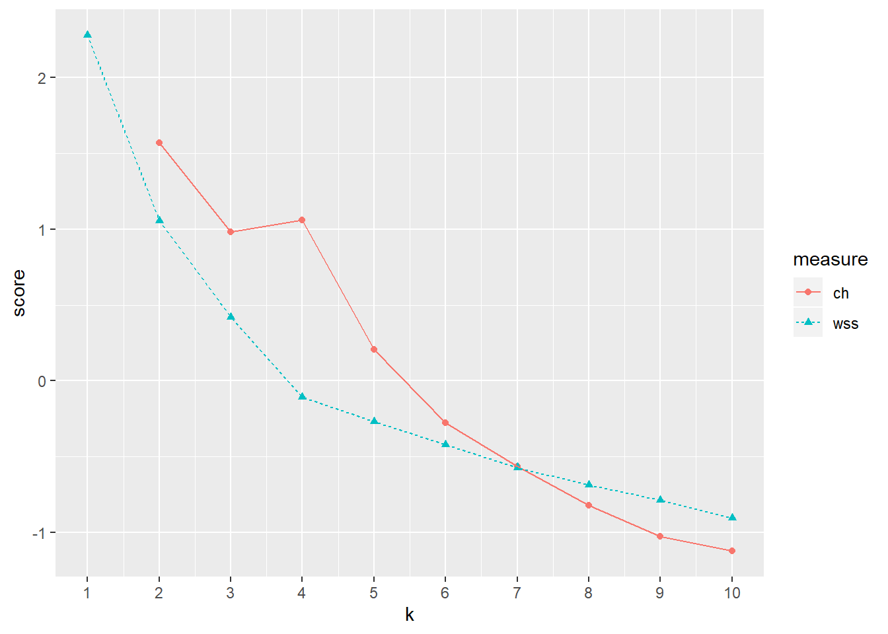
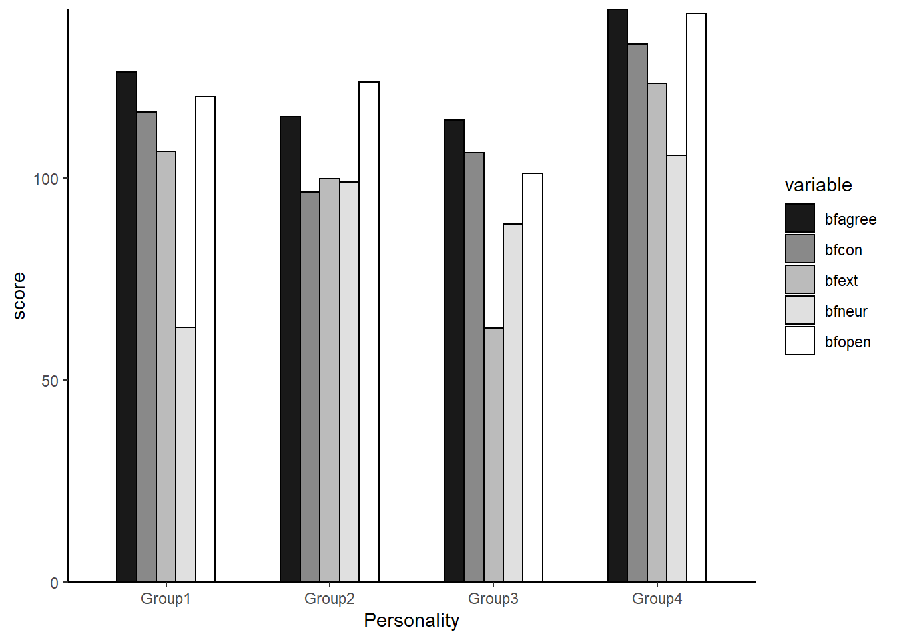

以下のコードを使う。
clust <- XXX #分析したいデータを入れる
# 距離の計算
uclust <- dist(clust)^2 #ユークリッド距離の平方
result <- hclust(uclust, method="ward.D2") #Ward法
groups <- cutree(result, k=4) #クラスタ数を4つとする
groups <- factor(groups)
#クラスタに名前を付ける
levels(groups)[1]<-"Group1"
levels(groups)[2]<-"Group2"
levels(groups)[3]<-"Group3"
levels(groups)[3]<-"Group4"
table(groups)
clust$groups<-groups
aggregate(.~groups, data=clust, FUN=mean)クラスタ数の分析
クラスタ数を選定する方法として、The Calinski-Harabasz indexがある。
クラスター数ごとに、クラスタ内の距離の2乗の合計値（within sum of squares; WSS）を算出し、その曲線のエルボーを探す。クラスタ数が増加すると、total WSSが減少するのだが、理想的なクラスター数を超えるとWSSの減少割合が落ちるという見込みからエルボー探しをする。
また、Calinski-Harabasz基準とは、WSSに対するクラスター間の分散（データセットの重心からすべてのクラスターの重心の分散）の割合である。
library(psych)
clust<-epi.bfi[,6:10]
エルボー…４…かな？
クラスタ分析
# 距離の計算
uclust <- dist(clust)^2 #ユークリッド距離の平方
result <- hclust(uclust, method="ward.D2") #Ward法
groups <- cutree(result, k=4) #クラスタ数を4つとする
groups <- factor(groups)
#クラスタに名前を付ける
levels(groups)[1]<-"Group1"
levels(groups)[2]<-"Group2"
levels(groups)[3]<-"Group3"
levels(groups)[4]<-"Group4"
table(groups)## groups
## Group1 Group2 Group3 Group4
## 71 67 35 58clust$groups<-groups
per<-aggregate(.~groups, data=clust, FUN=mean)
per## groups bfagree bfcon bfext bfneur bfopen
## 1 Group1 126.1408 116.29577 106.46479 62.95775 120.0986
## 2 Group2 115.0299 96.50746 99.85075 98.94030 123.6119
## 3 Group3 114.2000 106.20000 62.88571 88.60000 101.1714
## 4 Group4 141.6207 133.12069 123.32759 105.53448 140.7241#図示
library(ggplot2)
library(reshape2)
meltd<-melt(per, id.vars="groups",variable.names="items",value.name="per")
ggplot(meltd,aes(x=groups, y=per, fill=variable))+
geom_bar(stat="identity",position = "dodge", colour ="black",width=0.6)+
xlab("Personality")+ylab("score")+
scale_fill_grey(start =0.1, end=1.0)+
scale_y_continuous(expand = c(0,0))+
theme_classic()+
guides(fill=guide_legend(title=NULL))+
guides(fill=guide_legend(nrow=7))+
theme(legend.position="right")+
theme(legend.text=element_text(10))